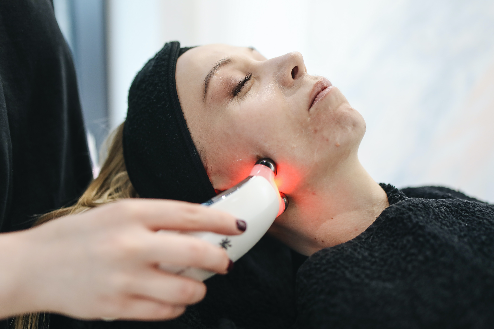
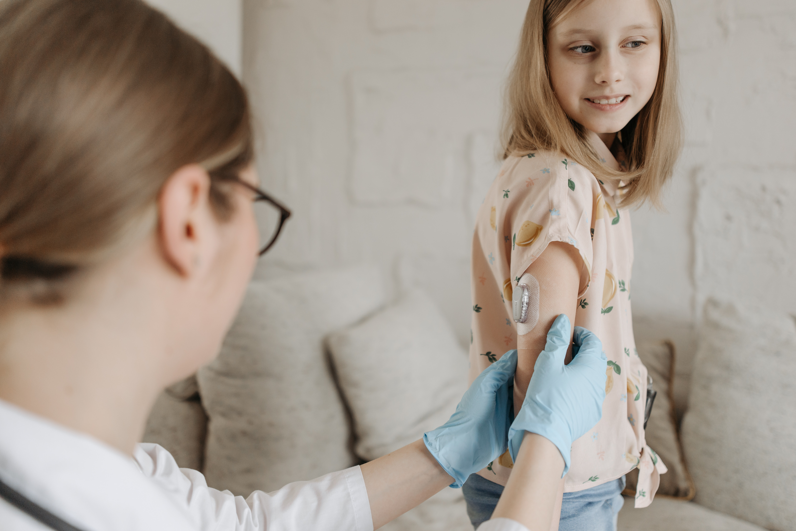

Descubra o mundo da medicina e suas áreas de atuação
Cardiologia
A cardiologia é um ramo da medicina que se concentra no estudo, diagnóstico e tratamento de doenças
relacionadas ao sistema cardiovascular, que envolve o coração e os vasos sanguíneos.
Ginecologia
A ginecologia é uma especialidade médica que se dedica ao estudo e tratamento do sistema reprodutor
feminino, incluindo órgãos como o útero, ovários, trompas de falópio, vagina e mamas.

Dermatologia
A dermatologia é uma especialidade médica que se dedica ao estudo, diagnóstico e tratamento das doenças e condições relacionadas à pele, cabelos e unhas. Os dermatologistas são médicos especializados no cuidado da saúde da pele.
Nutricionismo
O nutricionismo é a ciência que estuda a relação entre a alimentação e a saúde. Ele abrange a análise dos nutrientes presentes nos alimentos, suas funções no organismo e como eles podem ser utilizados para promover a saúde e prevenir doenças..
Ortopedia
A ortopedia é uma especialidade médica que se dedica ao diagnóstico, tratamento, reabilitação e prevenção de lesões e doenças do sistema musculoesquelético.

Pediatria
A pediatria é a especialidade médica que se dedica ao cuidado da saúde das crianças, desde o nascimento até a adolescência. O médico pediatra é responsável por prevenir, diagnosticar e tratar doenças infantis, além de acompanhar o crescimento e desenvolvimento das crianças.
Psicologia
A psicologia é a ciência que estuda o comportamento humano e os processos mentais. Ela busca compreender como as pessoas se desenvolvem, pensam, sentem, se relacionam e se adaptam ao ambiente.
Psiquiatria
A psiquiatria é uma especialidade médica que se dedica ao estudo, diagnóstico, tratamento e prevenção dos transtornos mentais. Os psiquiatras são médicos especializados no cuidado da saúde mental.